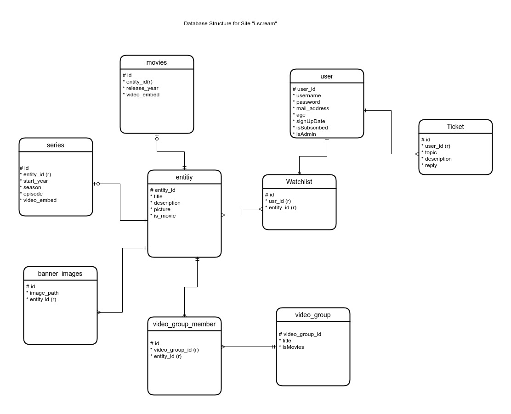

Dokumentation Projekt: iScream von Gruppe Web101
Beschreibung des Service
I-Scream ist eine Film-und Serienstreamingplattform mit Fokus auf Horror.
Alle Leute, die sich für Horror, Jumpscares und blutige Gemetzel interessieren, sind bei uns genau richtig.
Hier können sie sich einloggen und einen Premiumaccount erstellen, mit dem sie eine große Vielfalt und unzählige gruselige Stunden an Filmen und Serien genießen können.
Wir bieten auch eine Watchlistfunktion an, durch die sich jeder unserer Kunden genau das raussuchen kann, wonach ihm am Liebsten ist.
Besonderheiten
Der Markt für das Streaming von Horrorinhalten ist in Deutschland sehr dünn besiedelt bis kaum vorhanden, weshalb unser Service einen schnellen Zuwachs an Kunden geniessen dürfte. Durch das Anbieten eines Nischenprodukts, können wir uns schnell und stabil einen lukrativen Platz in der Streamingindustrie sichern.
Zielgruppe
Unser Service richtet sich vor Allem an Horrorbegeisterte und Gruselfreunde, die alleine oder mit Freunden schaurige Abende verbringen wollen. Die Altersgruppe, an die sich unser Service primär richtet, ist zwischen 18 und 30 Jahren, da diese statistisch häufiger zu Horrorfilmen- und serien greifen als ältere Artgenossen.
Ergebnisse der Recherche zu ähnlichen Seiten
Shudder (https://www.shudder.com)
- Größte Streamingplattform für Horrorfilme
- In Deutschland nicht erhältlich, aber kann per VPN in Großbritannien zugegriffen werden.
- Unser größter Konkurrent!!!


Netflix
- Größte Streamingplattform überhaupt
- Breites Angebot an Filmen und Serien verschiedener Genren
- Horrorfilme- und serien zwar vorhanden, jedoch spärliches Angebot


Design, Layout, Farben, Schriftarten
Logo
Das gewählte Logo des schmelzenden Eises in der Eiswaffel haben wir für unsere Seite verwendet, da es perfekt zu der Zweideutigkeit unseres Markennamens iScream passt.
Denn unser Firmenname einerseits “I scream” im Sinne von “ich schreie”, andererseits aber auch im Sinne von “Icecream” gehört werden, da beide Aussagen phonologisch identisch sind.
Dadurch, dass wir ein “schreiendes Eis” als Logo haben, kombiniert es beide Möglichkeiten perfekt miteinander.
Farben
Unsere Farbwahl fiel auf drei Farben, die in der Streamingbranche bereits einen bleibenden Eindruck hinterlassen haben: rot, schwarz und weiß.
Bei einigen unserer Konkurrenten wie Netflix und Shudder werden genau diese Farben verwendet. Allerdings unterscheidet sich unser Rotton deutlich durch eine sehr starke Ähnlichkeit zur Farbe des Blutes.
Wie man in der folgenden Abbildung unschwer erkennen kann, wirkt der Rotton unserer Konkurrenz deutlich knalliger und künstlicher. Während unser Rotton eine viel wärmere Wirkung entfaltet.
Die Assoziation mit Blut, welches im Horrorgenre bekanntlichermaßen etwas häufiger vorkommt als in anderen, soll damit im Bewusstsein des Nutzers gefestigt werden.

Unsere zweite Farbe, Schwarz, bietet einen sehr angenehmen Kontrast zu dem von uns gewählten Rotton und steht für das Schaurige, Unheimliche, Dunkle, und Mysteriöse, wofür das Horrorgenre bekannt ist.
Auch symbolisiert es natürlich den Tod und die Trauer – Themen die sich im Horrorgenre stets wiederfinden lassen.
Letztlich verwenden wir weiß für einen Großteil unseres Textes, da es sowohl zu unserem dunklen Rotton, als auch zum Schwarz einen perfekten Kontrast bietet.
Weiterhin ist weiße Schrift auf dunklem Hintergrund angenehmer für das Auge des Betrachters als umgekehrt (Dark Mode).
Selbstverständlich steht weiß auch für Hoffnung, etwas, das in unseren Filmen und Serien zwar vergeblich ist, aber dennoch wichtig für den Zuschauer.
Schriftarten
1. Rock Salt
Rock Salt ist eine für unseren Service äußerst passende Schrift, da sie verschmiert wirkt, so als könnte sie als Todesdrohung eines Killers an einer Wand stehen.
Sie symbolisiert somit das Gefährlich und Schaurige, welches unsere Inhalte perfekt repräsentiert. Sie eignet sich ausgezeichnet für Überschriften und Titel.
2. Outfit Black
Outfit Black ist mit seinem modernen Look und den verhältnismäßig dicken Linen sehr gut für Buttons geeignet.
3. Outfit Regular
Outfit Regular ist sozusagen der dünne Bruder von Outfit Black und eignet sich durch seine schmaleren Linien gut für längere Texte (z.B.: Impressum).
Funktionalität der Seiten
Login

Register

Index

Movies & Series

Watchlist

Watchscreen

Account

Edit Account

Edit Password

Edit Movies

Edit Series

Edit Video Groups

View Tickets

Reply to Tickets

ER-Modell

Tätigkeiten der einzelnen Gruppenmitglieder
Vadim Rodt
Im Allgemeinen war ich zwar kaum mit der Gestaltung und Erstellung der Datenbank zuständig - den Teil hat Niklas übernommen. Aber ich habe viel gelernt im Umgang mit CSS, PHP und SQL. Besonders viel arbeitete ich an der Layoutgestaltung mit Grid und Flexbox. Weiterhin habe ich viele Formulare erstellen dürfen, was mir den Umgang mit Datenbanken und SQL Anfragen gelehrt hat (Zu Beginn hatte ich keine Ahnung wie man ein Formular erstellt und musste mir ein Tutorial ansehen).
- Login- und Registrierungsformular
- Frontendanpassung (z.B.: Grid-Layout der series.php und movies.php, flexbox bei tickets.php & index.php)
- Adminfunktionen: View and Edit Tickets, Edit Movies, Edit Series, Edit Groups
- Accountbearbeitung: Change Password, Change Account Data
Polina Luzina
- Das Aussehen und die Gestaltung der Accountsseite
- Funktionalität der Accountseite : Anzeigen von persönlichen Daten des Nutzers
- Die Erstellung von edit-account und einigen Funktionen
Niklas Herzog
Mein (Niklas) Teil in der Arbeit an dem Projekt betrifft folgende Punkte: Ich habe große Teile der Datenbank mit entwurfen und zum Code beigetragen, ausserdem habe Ich viel mit der Datenbank interagierrenden Code geschrieben, welche in der index.php, der watch.php, der watchlist.php und in der movies.php anwendung findet. Vadim hat mir an vielen dieser Stellen zugearbeitet indem er die grafischen Elemente die dort zum Einsatz kommen ausarbeitete. Diesen hab Ich dann mit dynamischem Code „leben eingehaucht“ (im Objektorientierten Stil). Zum Beispiel lief das für die Boxen mit den Filmgrafiken in der movies.php so ab. Die grafischen Elemente in der index.php habe Ich hingegen selber ausgearbeitet. Aber auch hier hat Vadim einen Feinschliff dazu beigetragen.
Ich habe auch Formularcode für die kontakt.php geschrieben. Ich habe außerdem die Funktion Elemente zur Watchlist hinzuzufügen geschrieben. Hier stellte sich die vermittlung zwischen den Seiten movies.php und wathclist.php als herausforderung heraus, welche Ich mit „GET“ Datenvermittlung löste. Diese war eine einfache Lösung, aber sie wurde auch zur Tücke, wie Ich später herausstellte, als Ich das Problem hatte den Zustand der zufällig generierten movies.php beizubehalten. Hier wäre „POST“-Anwendung oder gar AJAX sinnvoller gewesen, was Ich für das nächste Project beachten werde. Momentan wird die Liste an Gruppen wie in folgendem Beispiel übertragen:
„movies.php?site=movies&objlist=5:1:4:3:3:5:“
Am ende befindet sich eine Liste an integern getrennt mit „:“. Diese Liste wird zunächst an die wathclist.php weitergegeben und dort wird sie dann zurück gegeben an die movies.php, wo die Elemente per „implode“ ausgelesen werden und angezeigt werden. Das ist auch der Grund, wieso die Liste danach nicht mehr neugeladen wird. Das ist eine Sache die durhcaus behoben werden kann, zeitlich nicht mehr zu schaffen ist.
Der Durchbruch zu der Datenbank im Allgemeinen stellte sich auch zunächst als Problem dar, das sich aber in der Anwendung letzendlich nicht als Herausforderung herausgestellt hat. Hier musste man ein paar mal damit hantiert haben um es voll und ganz zu begreifen, aber letzendlich ist der Zugriff einfacher als gedacht. Bei einem Folgeprojekt, würde Ich allerdings mehr von der Kommunikation mit der Datenbank Objektorientiert ablaufen lassen. In diesem Projekt haben wir eher in prozeduralem Stil begonnen, der Einfachheit wegen und haben die Codebasis in diesem Stil (vor allem in /includes/functions.php) so weit anwachsen lassen, bis es keinen Sinn mehr machte es umzustellen. Für ein nächstes Projekt ist das definitiv eine Sache die Ich anders lösen werde.
Ich habe mich im Vergleich zu Vadim weniger mit den Designelementen auseinandergesetzt, aber dennoch habe Ich Teile dazu beigetragen. Zum Beispiel habe Ich an der Slideshow und an den Filmempfehlungen darunter gearbeitet. Ebenso habe Ich die initiale Variante des Headers/Navbar ausgearbeitet. Allerdings muss Ich gestehen, dass Ich nicht sonderlich geschickt damit umgegangen bin und eher mässige Ergebnisse ablieferte, weswegen mich Vadim dort unterstützte. Das stelte für mich die gröte Herausforderung dar.
Allerdings kann das auch damit zusammenhängen, dass Ich in weiten Teilen das Handycap hatte nicht mit einer IDE gearbeitet zu haben und somit keine Vorschläge oder dergleichen erhalten hätte. Mein Workflow befand sich auf Linux mit dem Texteditortool „Kate“ und den Browsern Firefox und Vivaldi. Der endgültige Referenzbrowser war letzendlich „Chrome“, aber diese beiden Browser haben sich gut genug mit Chrome gedeckt um damit arbeiten zu können.
Nutzerrollen
Customer
- Einloggen und Registrieren
- Filme und Serien zur Watchlist hinzufügen
- Filme und Serien aus Watchlist entfern
- Filme und Serien anschauen
- Profildaten bearbeiten
- Admins kontaktieren
Admin
- Filme und Serien hinzufügen/löschen/bearbeiten
- Genren hinzufügen/löschen/bearbeiten
- Nutzeranfragen anzeigen lassen und beantworten
- Ansonsten die gleichen Funktionen, die auch Nutzer haben
Besonderheiten für die Nutzung und Known Bugs
- Beim Neuladen der movies.php oder series.php werden zufällige Gruppen angezeigt, wobei auch Doppelungen auftreten
- Bei Interaktion mit „Add“ oder „Remove from Watchlist“ werden Gruppen beim Aktualisieren der Seite nicht neu zufällig geladen, sondern bleiben in derselben Reihenfolge
- Wird in einer Unterseite wie „Slasher“ mit „Add“ oder „Remove from Watchlist“ interagiert wird man auf die Seite movies.php verwiesen
- Im Slider der Index.php sind die Links zu den jeweiligen Watch.php Sites vertauscht
- Bei Edit Account kann zwar die Mitgliedschaft von "Full Membership" zu "No Membership" geändert werden, aber nicht umgekehrt
- Header ist zwar responsive, jedoch nicht vollständig (Für Tablets nutzbar, für Handys aber nicht)
Unvollständige Implementierungen
- watch.php bechränkt sich auf das Anzeigen eines Youtube-Embeds, welches den/die Trailer des Objekts anzeigt
- es wird auf keine Daten aus externen Services zugegriffen
- die Funktionalität für Admins auf Tickets zu antworten, wurde bloß insofern umgesetzt, dass die Antworten in die Datenbank eingetragen werden, aber nicht wie vorgesehen per Main an den Kunden weitergeleitet werden, sondern lediglich vermerkt wird, dass das Ticket nicht mehr aktiv ist
Ausblick
Hätten wir für unser Projekt mehr Zeit gehabt, so hätten wir noch folgende Dinge umgesetzt:
- Responsiveness (vor Allem für Handynutzer) bei Header
- Adminfunktionen benutzerfreundlicher gestalten --> Nur die Felder Anzeigen, die für die jeweilige Funktion nötig sind
- Rating und Kommentarfunktion
- Suchfunktion mit Anzeige
Projektmanagement-Dokumentation
Arbeits-Logbuch